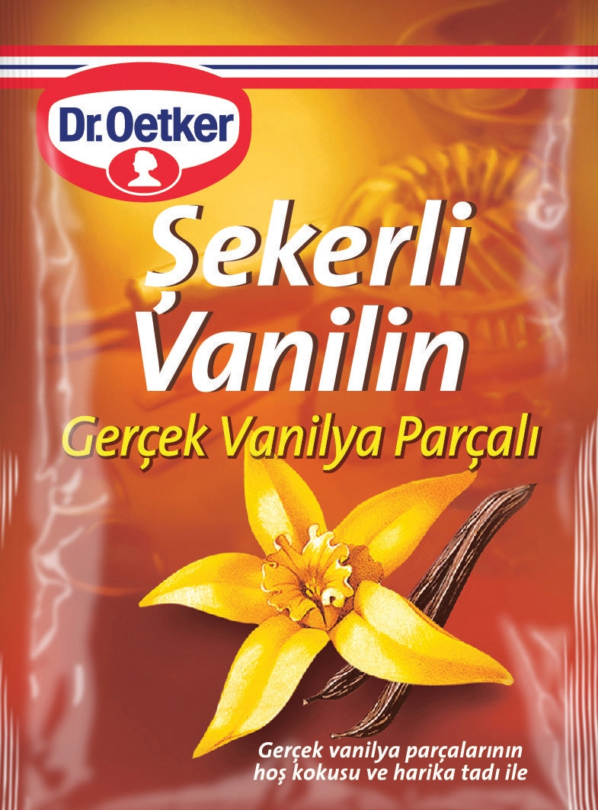
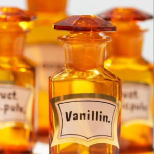
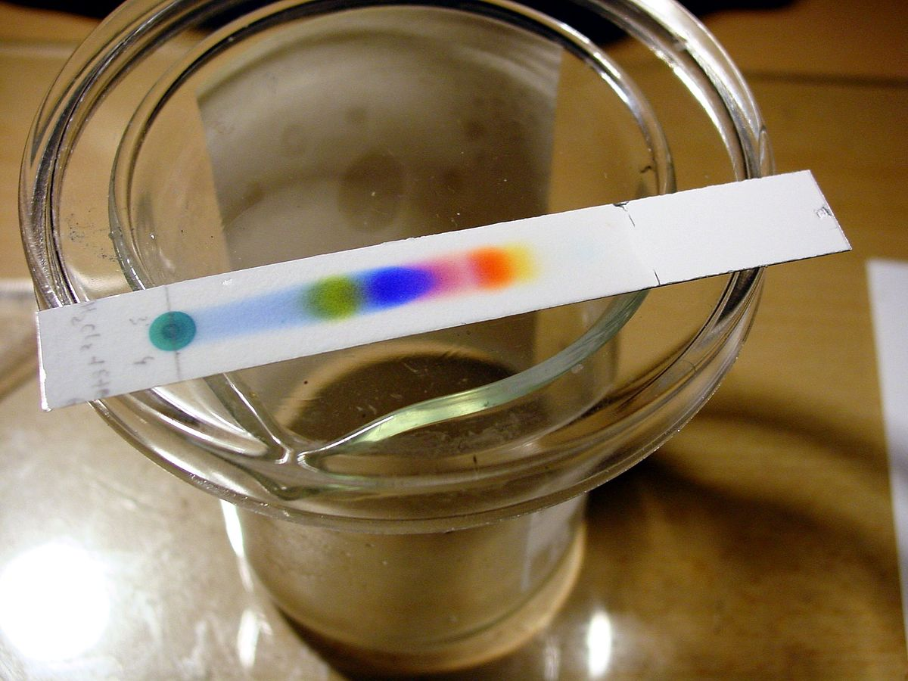

The greatest use of vanillin is as a flavor enhancer, usually in sweet foods. The Ice-cream and chocolate 75% covers the market for vanillin as a taste-flavored ingredient, with less amounts used in confectionery and pastries.

Vanillin is also used in the perfume industry.

To eliminate odor or bad taste in medicines, animal feed, and cleaning products.

Vanillin has been used as an "intermediate" chemical in pharmaceutical production and other pure chemicals. In 1970, more than half of world vanillin production was used in the synthesis of other chemicals, but during 2004 it was estimated that only 13% of the market was for vanillin.

Vanillin can be used as a general purpose stain for the development of thin layer chromatography plates (TLC) to assist in visualizing the components of the reaction mixture. This stain produces a range of colors for the different components.